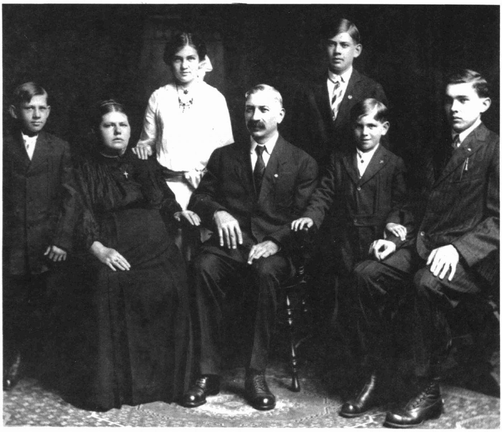

Wife of Joseph Kastl
Frances Fixa
1877–1960

What the book records
| Born | 20 September 1877, Moraviap. 41As printed
|
|---|---|
| Died | 29 April 1960p. 41As printed
|
| Buried | St. Mary's Cemetery, Omahap. 41As printed
|
Family
Spouse
Joseph Kastl 1869–1953
Married 9 January 1898 p. 41As printed
(m) Frances Fixa—9 Jan. 1898.
— p. 41
Children
- Stanley Kastl b. 1898 the line continues
- Frank Kastl 1900–1976
- Sophie Kastl b. 1902
- Edward Kastl 1904–1977
- John R. Kastl 1906–1981
- Rose Kastl b. 1919
- Leo Kastl 1908–1915
Children are listed in the order the book prints them (Rose, b. 1919, before Leo, b. 1908).